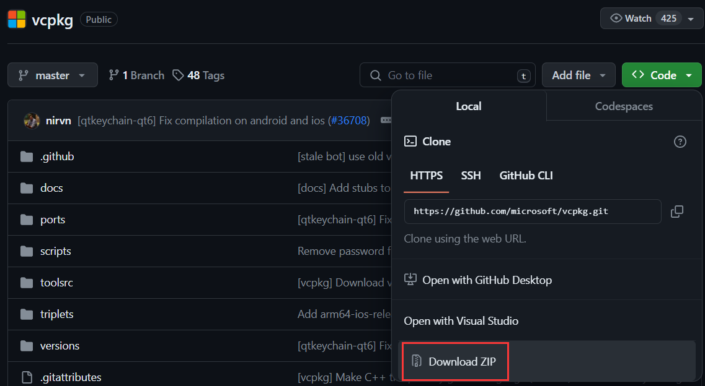
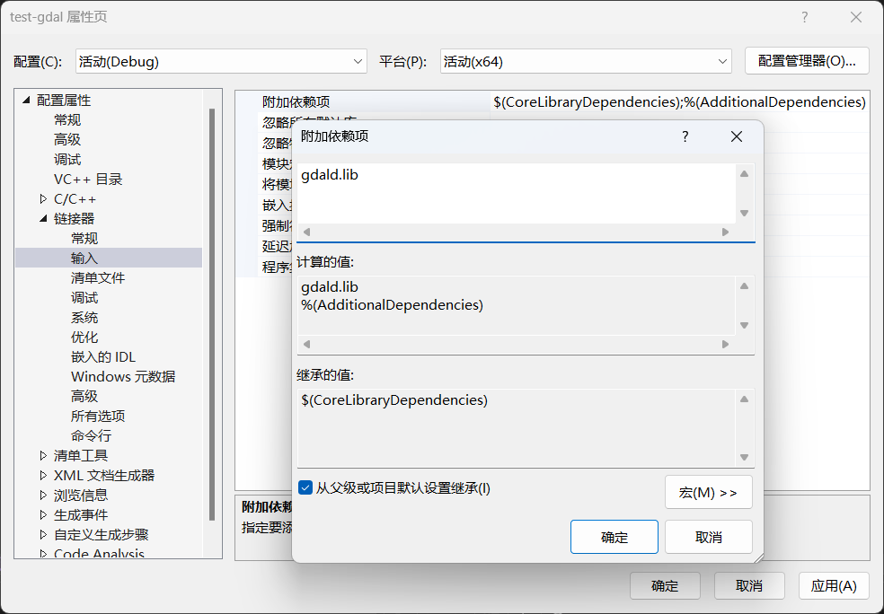

前言
在开发中，我们经常会使用到第三方库，以避免造轮子，从而提高开发效率。在C++中使用第三方库，首先需要进行以下步骤：
- 获取库文件和头文件
- 告知编译器头文件的所在目录
- 告知编译器库文件的所在目录
- 告知编译器要链接的库文件
库文件的获取主要有两种方式：
- 库厂商有提供库文件，自行选择所需版本下载即可
- 库厂商没有提供库文件，但开放了源代码，此时就需要自己根据源代码进行编译，得到所需的库文件
所有的库文件都提供有相应的头文件作为调用它的接口。换言之，我们在拿到库文件的同时，也拿到了头文件。
搭建使用第三方库的C++开发环境的核心步骤是固定的，也就是上述提到的4个步骤，但具体操作因平台而异。
出于毕业要求的需要，我前段时间写了个软著，其中涉及到gdal库的使用。鉴于网上针对这个库的C++开发环境搭建的教程相对较少，以下是我在Windows下的搭建gdal C++开发环境时做的一个记录，希望能够帮到有需要的人。
基于vcpkg的gdal库编译
vcpkg是微软推出的开源的C/C++库管理器，它能够自动为我们处理库编译所需的各种依赖关系，就像是Python中的miniconda。
-
下载vcpkg
使用git-bash中执行以下命令，以下载vcpkg。
git clone https://github.com/microsoft/vcpkg.git如果你没有git，打开上述命令中的网址，点击"Code"-“Download ZIP”，下载后解压即可。

-
使用vcpkg进行gdal库编译
在vcpkg文件夹的上级目录中，使用命令提示符(cmd)依次执行以下命令。
.\vcpkg\bootstrap-vcpkg.bat .\vcpkg\vcpkg install gdal:x64-windows接下来，可以喝杯茶、摸会儿鱼，等待编译完成。编译耗时因电脑性能而异，在我的电脑中，耗时42分钟。
-
查看库文件和头文件
进入
vcpkg/installed/x64-windows- bin和lib文件夹中分别存放着适用于Relese模式下的动态库文件(.dll)和静态库（也可能是动态库的导入库）文件(.lib)
- debug中的bin和lib文件夹分别存放着适用于Debug模式下的动态库文件(.dll)和静态库（也可能是动态库的导入库）文件(.lib)
- include文件夹中存放着头文件

以上就是基于vcpkg进行gdal库编译的操作过程，本文没有对相关命令进行讲解，更多详细信息请参考vcpkg的GitHub仓库中的README.md。
Visual Studio项目属性设置
打开Visual Studio，创建一个C++空项目，在项目中添加一个.cpp文件。随后，在项目右键菜单中点击“属性”，将弹出如下图所示的“[项目名]属性页”。

在设置项目属性之前，我们可以先将库文件和头文件放到项目文件夹中，这样在后续的项目设置中，就可以尽量使用相对路径。这样做的好处是，当我们将整个项目打包，放到其他电脑中打开时，就不用修改项目属性了。
- 在解决方案目录下新建一个名为"gdal"的文件夹

- 将
vcpkg/installed/x64-windows下的bin、debug、include、lib文件夹拷贝至刚刚新建的gdal文件夹中

接下来我们正式开始进行项目属性设置（以Debug配置为例）
-
设置附加包含目录 - 告知编译器头文件的所在目录
在"C/C++"-“常规”-“附加包含目录"中填写
$(SolutionDir)gdal\include
-
设置附加库目录 - 告知编译器.lib库文件的所在目录
在"链接器”-“常规”-“附加库目录"中填写
$(SolutionDir)gdal\debug\lib -
设置环境 - 告知编译器.dll库文件的所在目录
在"调试”-“环境"中填写
Path = $(SolutionDir)gdal\debug\bin
-
设置附加依赖项 - 告知编译器要链接的库文件
在"链接器”-“输入”-“附加依赖项"中填写
gdald.lib
最后点击确定，项目属性设置完毕。
测试
在main.cpp文件中输入如下代码，注意要将第7行中的文件路径改成你自己的，第13行中的函数实参也要做相应的修改。
#include <ogrsf_frmts.h>
#include <iostream>
using namespace std;
int main() {
GDALAllRegister(); // 自动注册所有驱动，只能读不能写
GDALDataset* poDS = static_cast<GDALDataset*>(GDALOpenEx(
"./data/point.shp", GDAL_OF_VECTOR, nullptr, nullptr, nullptr)); // 创建Dataset
if (poDS == nullptr) {
cout << "open failed." << endl;
exit(1);
}
OGRLayer* poLayer = poDS->GetLayerByName("point"); // 获取Layer，shapefile格式的LayerName就是文件名
OGRFeatureDefn* poFDefn = poLayer->GetLayerDefn(); // 获取Layer的定义（包含Geometry和Field的定义）
poLayer->ResetReading(); // 重置游标
OGRFeature* poFeature;
while ((poFeature = poLayer->GetNextFeature()) != nullptr) { // 输出Layer中所有Feature的字段值
for (int iField = 0; iField < poFDefn->GetFieldCount(); ++iField) {
OGRFieldDefn* poFieldDefn = poFDefn->GetFieldDefn(iField);
switch (poFieldDefn->GetType()) {
case OFTInteger:
printf("%d,", poFeature->GetFieldAsInteger(iField));
break;
case OFTInteger64:
printf(CPL_FRMT_GIB ",",
poFeature->GetFieldAsInteger64(iField));
break;
case OFTReal:
printf("%.3f,", poFeature->GetFieldAsDouble(iField));
break;
case OFTString:
printf("%s,", poFeature->GetFieldAsString(iField));
break;
default:
printf("%s,", poFeature->GetFieldAsString(iField));
break;
}
}
cout << endl;
OGRFeature::DestroyFeature(poFeature); // GetNextFeature()返回的是一个对象的拷贝，需要自行销毁
}
return 0;
}
点击“开始调试”，不出意外的话，程序可以正常运行。
但是，控制台首行会提示"Cannot find proj.db”。所谓的"proj.db"实际存放在vcpkg\installed\x64-windows\share\proj中，我们可以使用以下两种方式让程序找到它。
-
利用名为"PROJ_LIB"的环境变量，指明"proj.db"所在目录
-
将"proj.db"拷贝到项目目录以及可执行文件所在目录
（完）